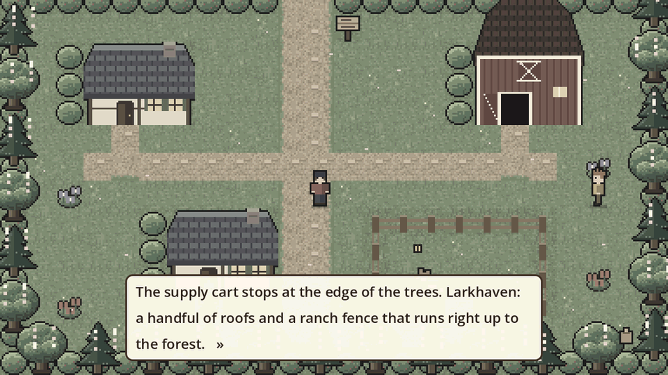
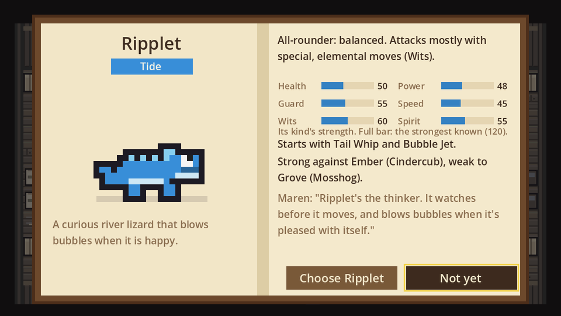
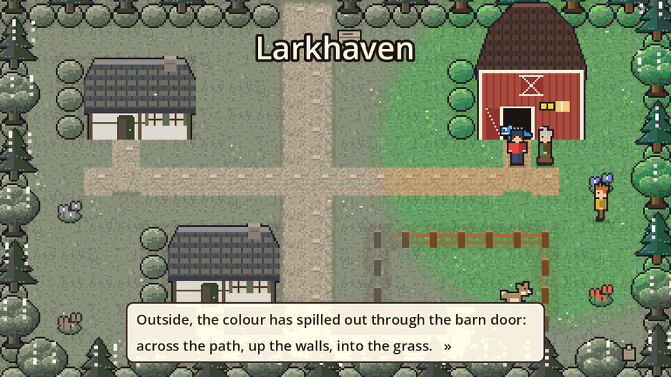
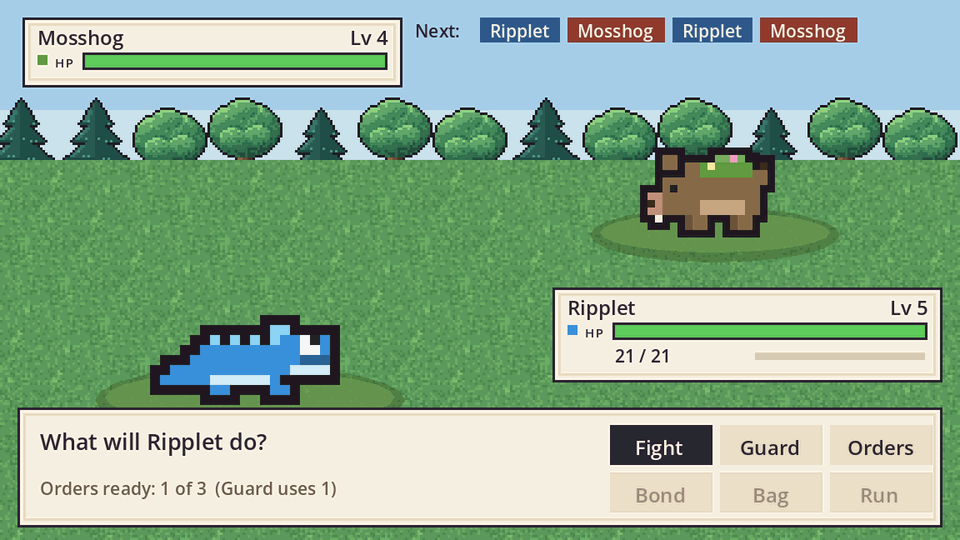
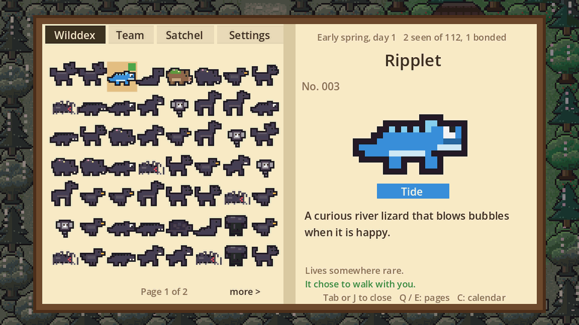
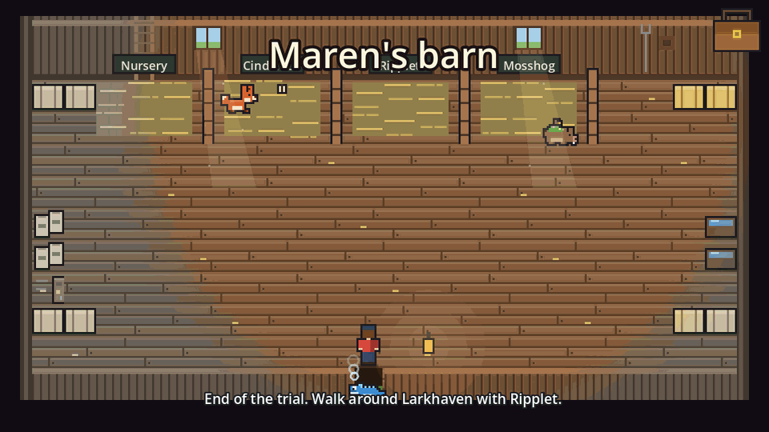
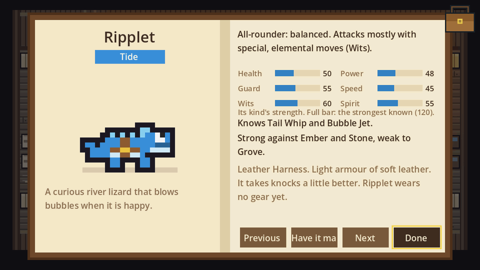
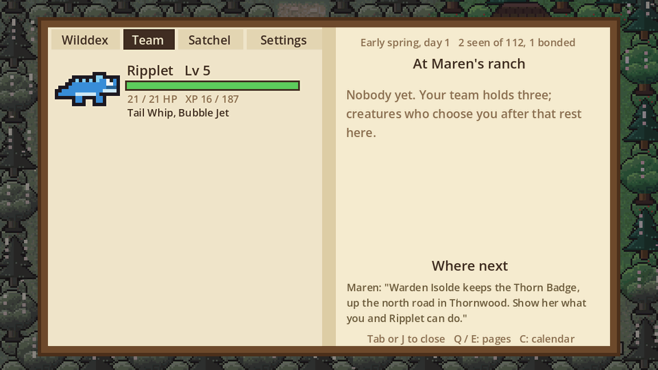

Your first steps
A supply cart drops you at the edge of Larkhaven, a handful of roofs and a ranch fence that runs up to the forest. Everything is grey. Old Maren walks out to meet you and asks you to sign her ranch register: pick a name, your look and your family. Your family matters a little: Farmfolk, for example, find that field and forest creatures trust them sooner.

Choose your partner
Follow Maren to her big wooden barn at the top right. Three young creatures wait in their stalls. Walk up to one and press Enter to read its page: its element, what it is good at, its first moves and what Maren thinks of it. Choose it, or say Not yet and meet the others. There is no wrong pick.
| Creature | Element | In a few words |
|---|---|---|
| Cindercub | Ember | A wolf pup with smouldering fur. It sleeps curled around warm stones. |
| Ripplet | Tide | A curious river lizard that blows bubbles when it is happy. |
| Mosshog | Grove | Moss grows on its back. Birds nest in it, and it lets them. |

When you choose, the bond floods the barn with colour, and it spills out of the door into town. Every creature that trusts you later brings a little more colour back.

Your first battle
Your friend Wren runs in and picks the partner that beats yours, so the first battle is a little hard on purpose. The row at the top shows who acts next. On your turn choose Fight and a move (each move says what it does), or Guard to brace. Orders refill as the battle goes on. Later you can Bond with wild creatures, use your Bag, or Run.

If you lose a battle you hurry home to Maren. Talk to her any time to heal your team, or rest at Old Ned’s inn.
The field book
Maren gives you a field book. Press J or Tab, or tap the bag at the top right. The Wilddex fills in as you meet creatures, Team shows your team and Maren’s ranch, Satchel holds your things, and Settings has the full controls. Turn pages with Q and E.

Then head north
Maren’s Where next note, on the Team page, points you up the north road into Thornwood. Walk through the tall grass to find wild creatures, coins and lures. To befriend a creature, choose Bond: you throw a lure and a calm meter starts; press when the marker is in the green. Weaker, calmer creatures are easier. Warden Isolde waits at the hawthorn gate with the Thorn Badge.
The element chart
Every creature and move has an element. A move against an element it beats hits about one and a half times as hard. A move against an element that beats it hits about a third softer. Everything else is normal.
| Element | Strong against | Weak to |
|---|---|---|
| Ember | Grove, Gale | Tide, Stone |
| Tide | Ember, Stone | Grove |
| Grove | Tide, Stone | Ember, Gale |
| Stone | Ember, Gale | Tide, Grove |
| Gale | Grove, Shade | Ember, Stone, Shade |
| Shade | Radiant, Gale | Gale, Radiant |
| Radiant | Shade | Shade |
The three partners go round in a circle: Ember beats Grove, Grove beats Tide, and Tide beats Ember. Gale and Shade beat each other, and so do Shade and Radiant, so those battles are a race.
Tip: a creature’s page always says what it is strong and weak against, so you never need to remember the chart. Before a hard battle, bring a creature that beats what the other side is using.
Maren’s ranch
Your team holds three creatures. Anyone else who chooses you goes to live at Maren’s ranch: up to four wander the paddock, and the rest are on the barn floor. Walk up to one (or tap it) to see its page. Choose Take along, or with a full team Swap in and pick who rests instead. The creature at the front of your team is the one that walks beside you.

- The trough (on the right wall): press E to put out two berries. Your ranch creatures come over to eat and trust you more.
- The Nursery: send two creatures there from their pages (To the stall), then ask at the stall. Two from the same family, and a few special pairs, can have an egg for 80 coins. It hatches while you travel, and Maren writes to tell you.
- The workbench (on the left wall): press E and your partner tries on gear. Maren makes the pieces you don’t have yet, for coins. A harness helps it take knocks, a bell helps trust grow, a ribbon makes it quicker, and four charms soften one element’s moves. Gear shows on the creature wherever you see it.

Out on the road, a runner sometimes brings a letter from Maren with news of your ranch creatures (they miss you a little, and trust you more) and where to go next.

Controls
| To | Keyboard | Phone or tablet | Gamepad |
|---|---|---|---|
| Walk | Arrow keys or WASD | The pad, or tap where to go | Left stick |
| Talk, choose | E or Enter | The button beside the pad | A |
| Back | Esc | Tap outside the book | B |
| Field book | J or Tab | Tap the bag, top right | Y |
A little further on (light spoilers)
Wren catches up with you on the Thornwood trail, and if you keep exploring the old trees, something large and gentle may step out to meet you. Beyond the hawthorn gate lies the Saltmarsh Coast. Each Warden’s badge lets stronger creatures listen to you.